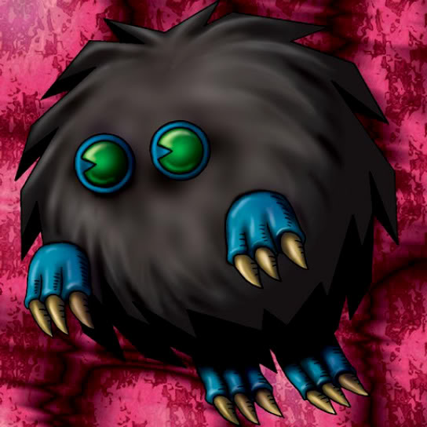

Wretched Ghost of the Attic

STATS
ATK: 550
DEF: 400DECK COST
Deck Cost per Card: 10Fusion List (8 Possible Fusions)
- Wretched Ghost of the Attic + Arlownay = Rose Spectre of Dunn
- Wretched Ghost of the Attic + Dancing Elf = Dark Elf
- Wretched Ghost of the Attic + Dark Plant = Rose Spectre of Dunn
- Wretched Ghost of the Attic + Fungi of the Musk = Darkworld Thorns
- Wretched Ghost of the Attic + Lesser Dragon = Koumori Dragon
- Wretched Ghost of the Attic + Petit Dragon = Blackland Fire Dragon
- Wretched Ghost of the Attic + Psychic Kappa = Kappa Avenger
- Wretched Ghost of the Attic + Rainbow Flower = Rose Spectre of Dunn